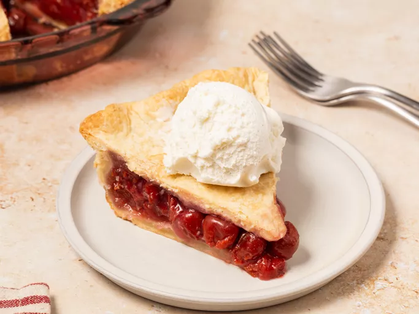

Cherry Pie

Description
Cherry pie is a classic dessert beloved for its bright, tangy flavor and nostalgic charm. Made with a buttery, flaky crust and a sweet-tart cherry filling, this pie strikes the perfect balance between rich and refreshing. As it bakes, the cherries soften and release their juices, creating a luscious, ruby-red center that bubbles up through the golden, crimped edges of the crust. Often enjoyed warm with a scoop of vanilla ice cream, cherry pie is a timeless treat that evokes memories of summer days, family gatherings, and simple, homemade comfort.
Ingredients
- 2 cups all-purpose flour
- 1 pinch salt
- 1 cup shortening, chilled
- ½ cup cold water
- 2 cups pitted sour cherries
- 1 ¼ cups white sugar
- 10 teaspoons cornstarch
- 1 tablespoon butter
- ¼ teaspoon almond extract
Steps
- Gather the ingredients.
- Whisk flour and salt together in a bowl. Cut in shortening with 2 knives or a pastry blender until mixture resembles coarse crumbs.
- Mix in cold water by hand just until dough holds together. Divide dough in half and form into disks. Wrap each disk in plastic wrap and refrigerate until chilled, 30 minutes to 1 hour.
- Roll out 1 dough disk into an 11-inch circle and press it into a 9-inch pie dish. Place in the refrigerator until needed.
- Roll out remaining dough disk into an 11-inch circle for the top crust, transfer it to a plate or baking sheet, and refrigerate until needed. Preheat the oven to 375°F (190°C). Place a baking tray in the oven to preheat.
- Place cherries, sugar, and cornstarch in a medium, non-aluminum saucepan. Allow mixture to stand until juices begin to release, about 10 minutes.
- Bring to a boil over medium heat, stirring constantly. Lower the heat and simmer until juices thicken and become translucent, about 1 minute. Remove from heat and stir in butter and almond extract. Allow filling to cool to lukewarm.
- Pour cooled filling into prepared pie crust. Cover with top crust, trim and crimp the edges to seal, and cut vents for steam.
- Bake in the preheated oven on the preheated baking tray until crust is golden brown, 45 to 55 minutes. Allow to cool for several hours before slicing.
- Serve with a scoop of ice cream and enjoy!
Home